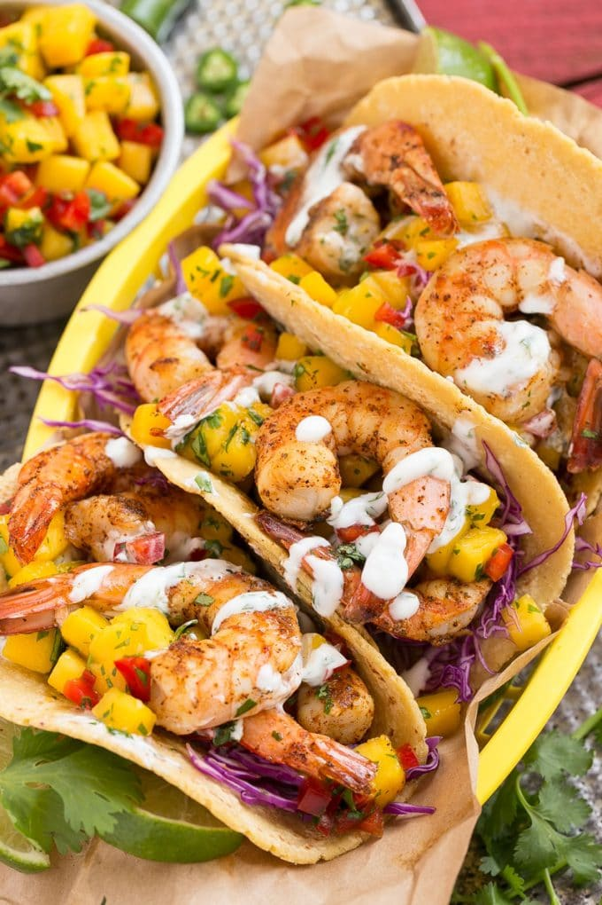

Spicy Mango Shrimp Tacos
Ingredients
- 1 lb shrimp (peeled and deveined)
- 1 mango (diced)
- 1 jalapeno (diced)
- 1/4 cup cilantro (chopped)
- 1 tablespoon olive oil
- 2 teaspoons chili powder
- 1 teaspoon cumin
- 1/2 teaspoon paprika
- Salt and pepper to taste
- Soft corn tortillas
In a bowl, combine shrimp with chili powder, cumin, paprika, salt, and pepper.
Heat olive oil in a pan, cook shrimp until pink.
Assemble tacos with mango, jalapeno, cilantro, and shrimp.